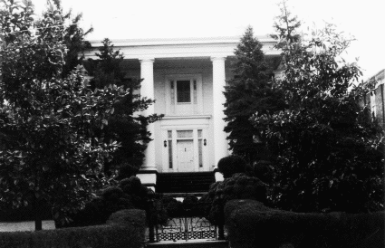

606 W. Johnson Street
Staunton, Virginia

-
Constructed: 1851
-
Original Use: Residence
-
Ownership History: George M. Cochran built this house in 1851
and sold it to the Wesleyan Female Institute in 1870.
-
Number of Stories: 2
-
Architectural Style: Greek Revival
-
Exterior Features: Brick construction with hip roof. Two- story
portico over porch supported by Truscan columns. Six-panel front
door with transom and sidelight.
-
Interior Features: